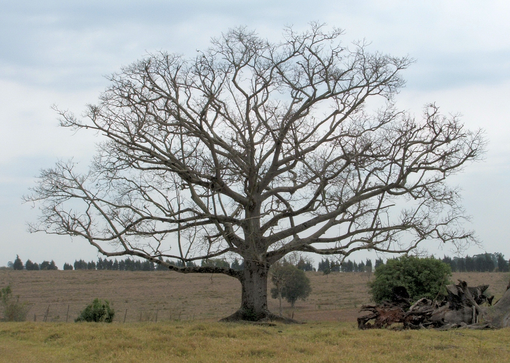
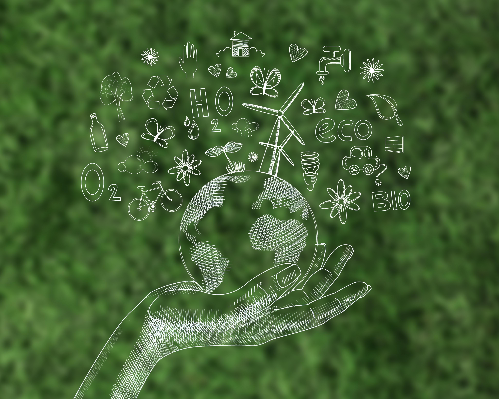
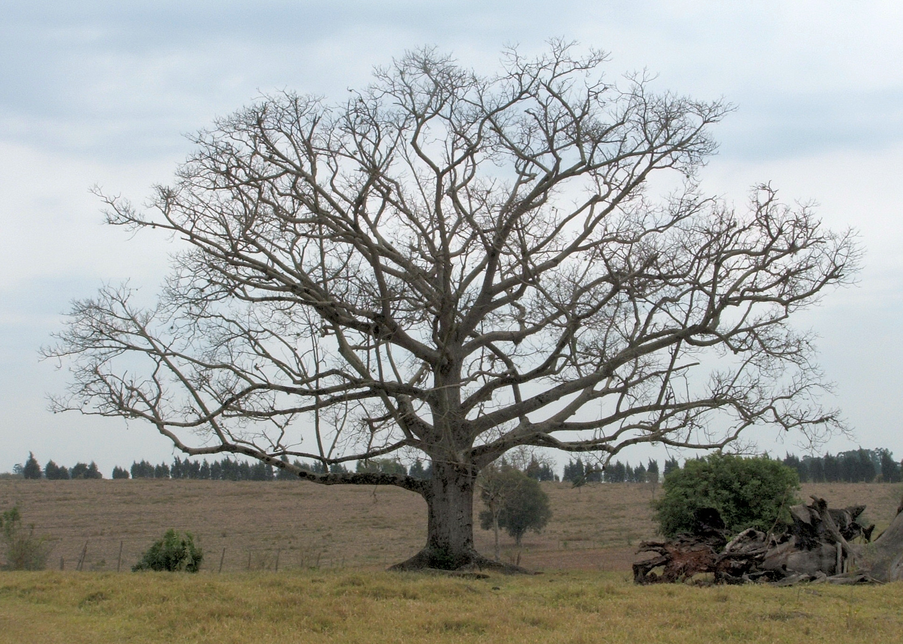
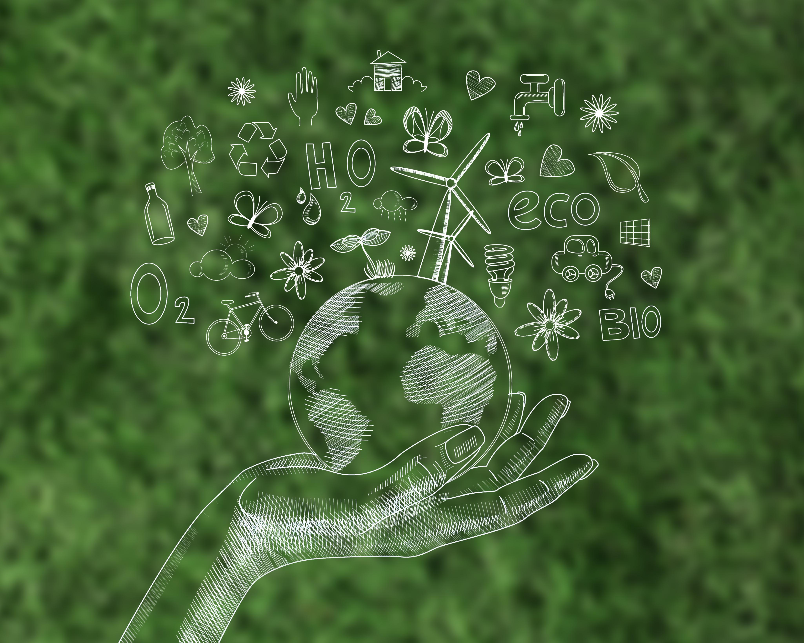

Bem-vindo ao Verde no Mundo
É uma plataforma dedicada a promover a sustentabilidade e a recuperação ambiental através do plantio de árvores ao redor do globo. Nosso objetivo é unir pessoas e recursos para criar um impacto positivo no meio ambiente, combatendo as mudanças climáticas e promovendo a biodiversidade. No nosso site, você pode conhecer mais sobre nossa missão, entrar em contato conosco para dúvidas e colaborações, e fazer sua doação para ajudar a plantar árvores em diversas regiões do mundo. Junte-se a nós e faça a diferença para um futuro mais verde e sustentável.
 


